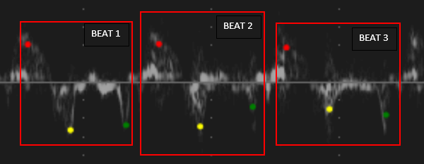

Image processing of blood flow in human heart
This is project uses a variety of different image processing techniques and algorithm developments to develop computer programs for measuring blood flow in human heart. No medical knowledge or background Is required, and the images will be provided.
Prerequisite skills:
- Basic knowledge of Python
- Ideal for students interested in Image Processing
Project:
The architecture comprises an object detection model for the isolation of complete heartbeats followed by a keypoint localisation network to identify the S', E' and A' landmarks in each beat object. A sliding window approach was adopted to ensure all possible beats were detected and ensure full utilisation of the available data.
In the example image, bounding boxes generated by the object detector and keypoints localised by the network are displayed.